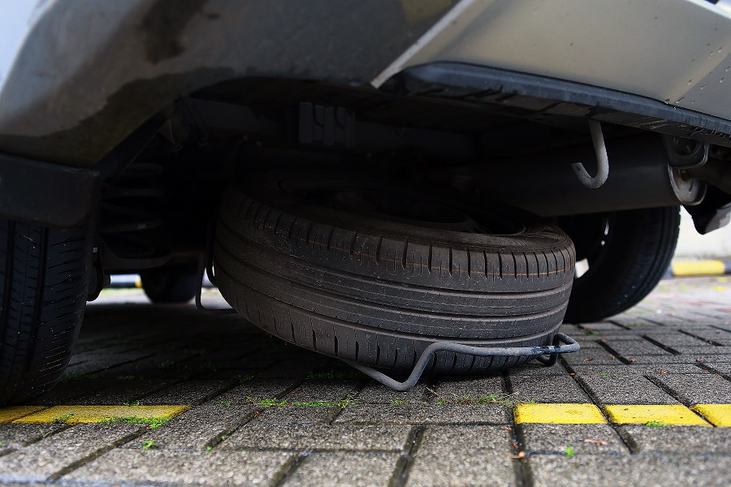
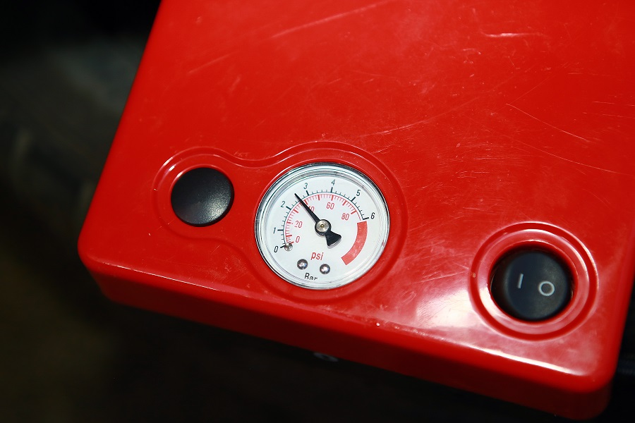

BAN SEREP WAJIB DIRAWAT!
Meskipun hanya disimpan sebagai cadangan ketika kondisi ban utama mengalami gangguan, namun ban serep wajib mendapatkan perawatan berkala. Karena jika tidak dilakukan perawatan, kondisi ban serep dapat mengalami penurunan dan bisa tidak dapat digunakan saat dibutuhkan. Tentu kondisi tersebut akan sangat merepotkan Mitsubishi Family saat membutuhkan ban serep di perjalanan.

Perawatan ban serep cukup mudah, hal pertama yang perlu diperhatikan ialah tekanan angin. Meskipun tidak digunakan tekanan angin dapat berkurang akibat penguapan di ruang penyimpanan. Anda disarankan mengecek tekanan angin pada ban serep sekurangnya sebulan sekali, disarankan juga untuk mengisi tekanan ban serep dengan tekanan 5-8 Psi di atas ban utama.

Pastikan juga ban dan velg cadangan dalam kondisi bersih bebas dari kotoran atau cipratan lumpur, hal tersebut guna menghindari karat pada velg. Selain itu ada baiknya ban serep digunakan meskipun ban utama tidak bermasalah, hal ini dilakukan agar karet ban serep tidak pecah atau kaku karena lama tidak digunakan. Dengan melakukan rotasi ban utama dengan ban serep juga dapat membuat umur ban dapat sama satu sama lain dan tidak ada ban yang habis terlebih dahulu.
